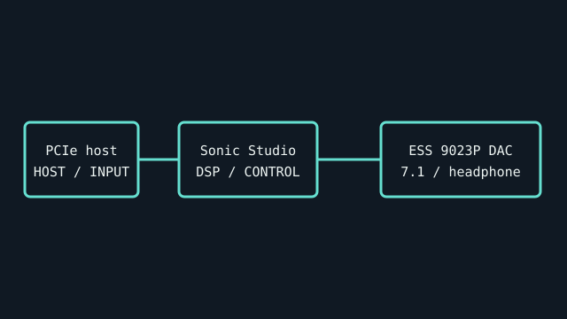

[ INDIVIDUAL COMPONENT // SOUND HARDWARE ]
ASUS Xonar AE
PCI Express gaming sound card with 7.1-channel output, an ESS 9023P DAC, and a built-in 150-ohm headphone amplifier. ASUS lists the model as Xonar AE.

IDENTIFICATION: Match the complete printed model, revision, bundled breakout, and accessory markings. Specs below describe this named model; family-level variants are not assumed interchangeable.
Specifications
| Catalog subcategory | PCI Express sound cards |
|---|---|
| Product ID | ASUS Xonar AE (model Xonar AE / Xonar AE audio card) |
| Bus / host | PCI Express expansion card; verify x1-slot and chassis clearance from the official manual. |
| Connectors and I/O | Analog 7.1-channel output, microphone/line input, and digital output. Jack assignment and supported output mode are controlled by Sonic Studio software; inspect the bracket and manual before wiring. |
| Chipset / conversion / protocol | ESS SABRE 9023P DAC; 24-bit/192-kHz audio output; 110 dB SNR specification and integrated headphone amplifier rated for headphones up to 150 ohms. |
| Drivers / operating systems | ASUS Sonic Studio driver/software downloads are model-specific and OS-version dependent. Confirm the Xonar AE support page for the target Windows release; no macOS/Linux manufacturer support is asserted. |
| Variant compatibility | Xonar AE is a PCIe model and must not be mistaken for older PCI Xonar DX or STX. Confirm the package model; swappable op-amp and EMI backplate features are Xonar AE-specific. |
Service & preservation
Keep the low-profile bracket, driver package, and any replacement op-amp information with the card. Photograph the board revision and op-amp marking; inspect PCIe contacts and jack wear before installation.
Identification and compatibility checks
- Photograph the product/model label, board silkscreen/revision, connector faces, cable assemblies, and accessory part numbers before installation.
- Check electrical bus and host slot or USB/MIDI protocol support against the exact manual; connector shape alone does not establish compatibility.
- For analog I/O, confirm line/mic/instrument level, phantom-power behavior, channel map, and direction from the model-specific documentation before connecting equipment.
- When software or driver support is uncertain, preserve the last known-good installer and document tested host OS, driver version, and device identifier.
Primary manufacturer & standards sources
- ASUS Xonar AE official specificationsManufacturer confirms PCIe gaming card, 7.1 output, ESS 9023P DAC, 24/192 audio, 110 dB SNR and 150-ohm headphone amplifier.
- ASUS Xonar AE manuals and softwareModel-specific manufacturer manuals/support.
- ASUS Xonar AE driver pageManufacturer driver/software archive; OS version support is package-specific.
Source selection is model-specific where an original manual or vendor product/support page exists. Archived scans preserve manufacturer documentation; operating-system claims are limited to what the cited product/manual materials identify.